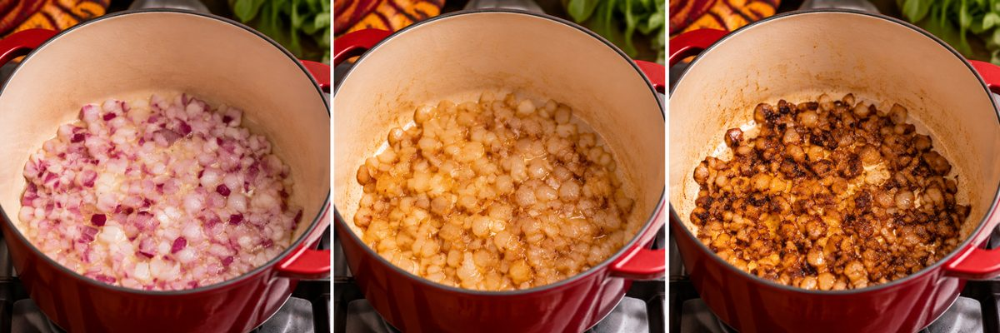
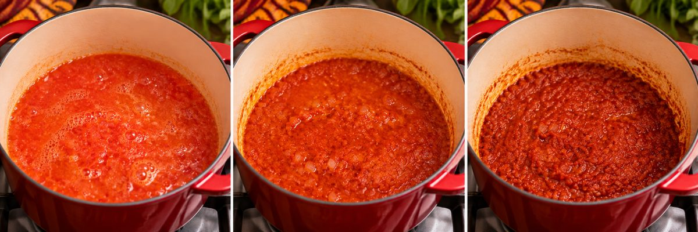

Orientation
The tomato base is one of the most important stages in Jollof. It gives the dish much of its colour, aroma and flavour.
Why it matters: If the tomato mixture is not cooked enough, the finished rice can keep an unpleasant sour taste — and adding seasoning later may not fix it.
Step 1 — Cook the onions
Peel and chop the onions according to the recipe. Heat the required amount of oil in your pot, add the onions and cook them until they are golden or slightly brown.
- the colour change from pale to golden
- the point where onions become too dark — that is what you are avoiding

Steps 2 and 3 — Tomato paste, then tomato mixture
Fry the tomato paste
Add the tomato paste to the onions and stir. Let it cook in the oil, stirring as needed so it doesn’t stick to the bottom or burn.
Add the fresh tomato mixture
Add the blended fresh tomato mixture and stir to combine it with the onions and paste. Let it cook while you watch its appearance and aroma, and taste it.
Step 4 — Judge when the tomato base is ready
Use your senses. The most important cue in this preparation is taste: a mixture that still tastes noticeably sour needs more cooking.
- how the mixture goes from thin and watery to thicker and richer
- how the colour deepens

A picture alone can’t confirm the base is ready. Stage 3 tells you it is time to check, not that it’s finished. Smell and taste decide.
Quick check: tomato base
Key takeaways
- Cook onions to golden or slightly brown — not dark or burnt.
- Judge the tomato base by taste and aroma, not by time or looks alone.
- A sour tomato base leads to sour rice — fix it now, not later.